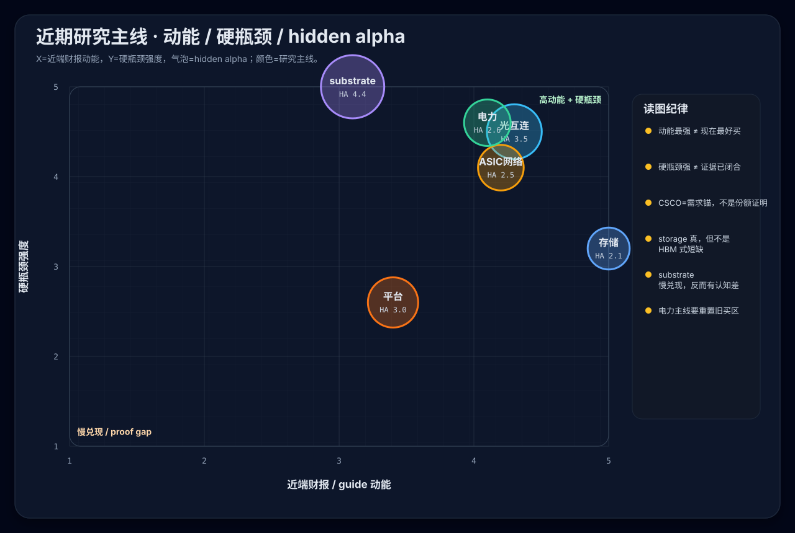
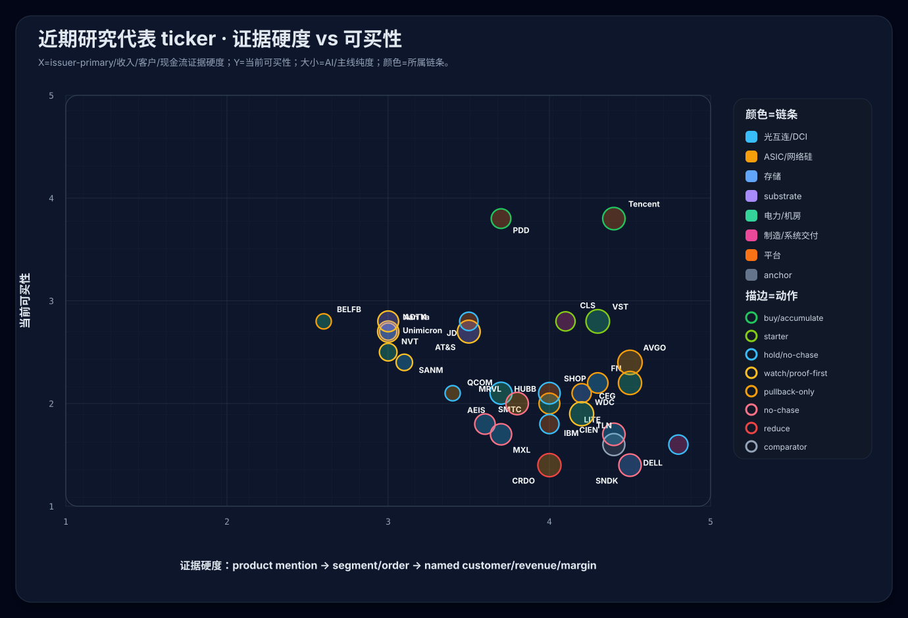
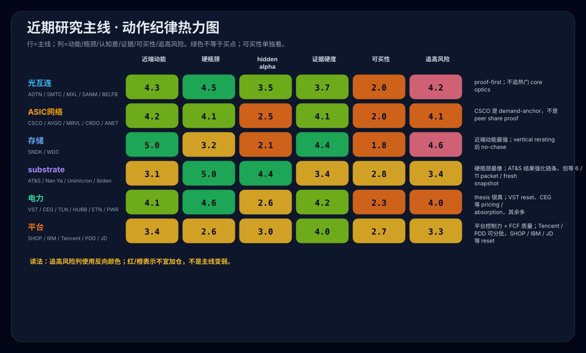
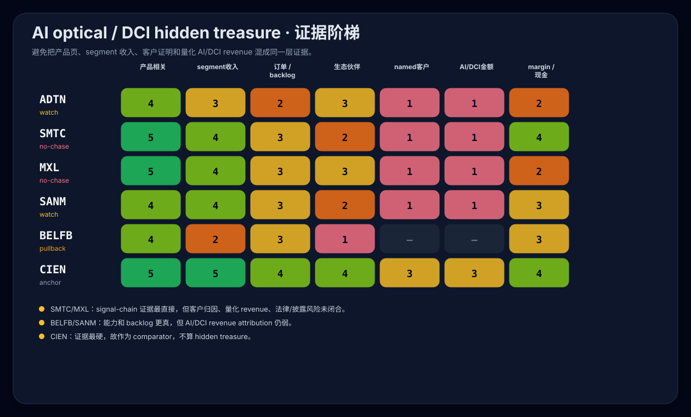
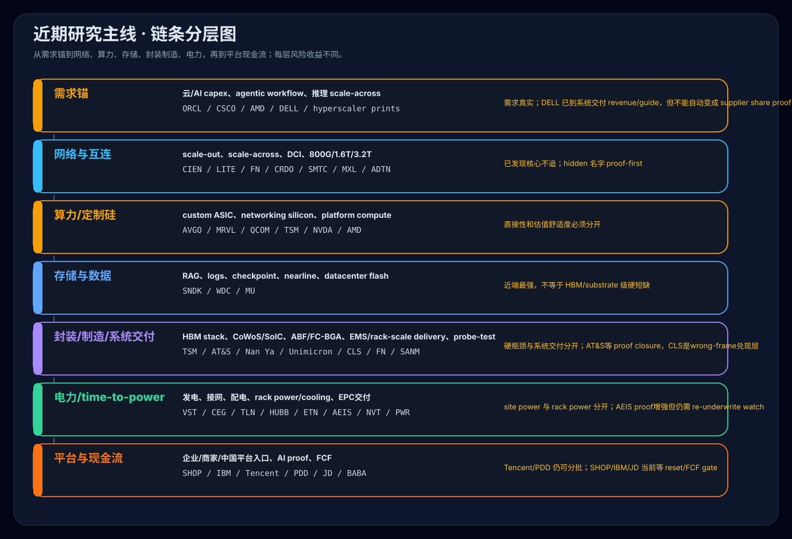

近期研究主线与多维图表
Language / 语言: 中文 | English
更新时间：2026-05-30 CEST（图表输入已吸收 2026-05-22 QCOM refresh、2026-05-29 DELL / AEIS / CLS / AT&S overlay、以及 Phase 9 platform current-live price/action refresh） 关联导航：股票研究首页 · 数据中心上下游首页 · 跨行业股票观察首页 · 互连、光器件与电源器件 · 半导体与基础算力 · 制造、封装与系统集成 · 机房基础设施与配电散热 · 平台科技与互联网 · 方法与来源
状态：Phase 4 图表输入已刷新；Phase 9 又同步了平台 lane 的 5/29 price/action layer。下方 SVG 与
generate_recent_research_mainline_svgs.py机械一致，并已把 QCOM 从旧 watch 语义改为 hold / no-chase，把 DELL / AEIS / CLS 加入代表 ticker 矩阵，把 AT&S 的 post-result / wait-for-06-11 packet 语义写入输入层；平台 lane 里 SHOP/IBM/JD 已从旧 starter/buy 语义降为 reset/wait，Tencent/PDD 保持分批。图表仍是 browse-layer 总览；current action 以 当前主攻桶高信号深挖优先级（内部维护页，未公开）、SHOP与IBM 当前live深挖结论（内部维护页，未公开）、中国科技巨头六家公司深挖结论、ANET与Nokia 当前live执行区间 和相关实体页为准。
这页回答什么
最近新增研究覆盖面很宽，若把全部 ticker 放进一张散点图会变成低可读性的“点云”。本页把近期研究压成几条主线，并用不同图表分别回答不同问题：
- 哪些链条近端动能最强，哪些更像硬瓶颈，哪些还有 hidden alpha。
- 哪些 ticker 已经有硬证据但不可追，哪些只是 proof-first watchlist。
- 光互连 / DCI hidden treasure 里，每家公司证据停在哪一层。
- 这轮研究从需求锚、网络、算力、存储、封装制造、电力到平台现金流，分别解决什么问题。
边界：本页是 browse-layer 总览，不新增 TradingView mutation，不新增 broker/account 动作，不把已有 hold / watch / no-chase / pullback-only / staged add 纪律升级成 fresh buy。
主线压缩
| 主线 | 代表页面 | 核心判断 | 当前动作纪律 |
|---|---|---|---|
| 光互连 / DCI / signal-chain | AI光互连与DCI hidden treasure第二轮深挖结论（内部维护页，未公开） · 互连、光器件与电源器件 | AI 网络复杂度扩散到 DCI、coherent、DSP、copper/optical signal chain、复杂制造与电源连接；但热门 optics 已被发现。 | ADTN / SMTC / MXL / SANM / BELFB 只做 proof-first；CIEN/FN/LITE/COHR 更偏 comparator 或 pullback-only。 |
| AI networking / custom ASIC | CSCO Q3 FY2026 AI网络read-through与执行区间影响 · AI定制ASIC相对估值与行动结论（内部维护页，未公开） | CSCO print 是强 demand-anchor / TAM-upside proxy，但不是 peer share proof；AVGO 质量最清楚，MRVL/CRDO/ALAB 多已 rerate。 | 不机械上调 peer zones；AVGO 回撤买优先于高 beta 追涨，CRDO/MRVL 等 no-chase / reset-only。 |
| 存储 vs substrate / ABF / FC-BGA | 光通信、存储与substrate瓶颈对比 · 当前主攻桶高信号深挖优先级（内部维护页，未公开） | 存储近端报表动能最强；substrate/ABF 更像 package-level hard bottleneck；二者不能混成同一买点。 | SNDK/WDC/LITE/FN 多为 no-chase / pullback-only；AT&S / Nan Ya / Unimicron 等等客户、ramp、margin proof。 |
| 电力 / time-to-power / 机房基础设施 | VST、CEG与TLN 当前live研究结论（内部维护页，未公开） · HUBB、ETN、NVT与PWR 电气基础设施对照 | AI data center 约束从 GPU 扩到发电、接网、配电、rack/cooling 和 EPC 交付；但大多已被市场发现。 | VST 旧买区失效后先 reset；CEG/HUBB/ETN/PWR/TLN 多为 premium/pullback-only，不因 thesis 真就追。 |
| 平台科技 / 企业与商业基础设施 | SHOP与IBM 当前live深挖结论（内部维护页，未公开） · 中国科技巨头六家公司深挖结论 · 平台科技与互联网 | 平台控制力必须落到 FCF、margin、资本回报和 AI/cloud proof；SHOP/IBM 是企业/商业基础设施补充。 | Tencent/PDD 更主动；SHOP/IBM 当前都不是 fresh buy、只等 reset；JD/BABA/Baidu/Xiaomi 等价格或 FCF gate。 |
2026-05-30 overlay：本页 SVG 输入已同步 QCOM Hold / no-chase、DELL post-print validated / hold / no-chase、AEIS hold / re-underwrite watch、CLS staged add while in zone、AT&S wait-for-06-11 annual-report packet / wait-for-weakness。这些是动作纪律和可买性校正，不是 fresh-buy 升级。
图 1：动能 / 硬瓶颈 / hidden alpha

读法：
存储在近端动能上最强，但 hidden alpha 和可买性已经被 vertical rerating 压低。substrate / ABF / FC-BGA近端财报兑现慢，但硬瓶颈强度和认知差空间更高。电力 / time-to-power逻辑很硬，问题在大多数名字已经从 hidden 变成 premium / reset discipline。
图 2：代表 ticker 的证据硬度 vs 当前可买性

读法：
- 右下角是“证据强但现在不能追”的拥挤区，例如 DELL、SNDK、LITE、CRDO、CIEN；DELL 已验证到 AI server revenue / FY27 guide，但 post-print 不追。
- 右中是“主线真但需要回撤或重置”的区域，例如 AVGO、FN、WDC、VST、CEG、HUBB；AT&S 证据更硬但仍等 6/11 annual-report packet / weakness。
- 中部是 proof-first 或 re-underwrite 研究区，例如 ADTN、SANM、BELFB、AEIS、AT&S、Nan Ya、Unimicron、NVT；AEIS 的 DCC monetization 已真，但跌破后只做 hold / re-underwrite watch。
- CLS 是制造/系统交付层的例外：证据已到 wrong-frame AI delivery，但只在
340-380区间内 staged add / recheck，不是无条件 buy。 - QCOM 已从旧
watch改为hold / no-chase：Physical AI / data-center optionality 更真，但财务 attribution 仍未闭合。 - 平台科技的 Tencent / PDD / JD 之所以更靠上，不是 AI 纯度更高，而是价格/估值/现金流纪律更可执行。
图 3：动作纪律热力图

这个热力图把“主线强度”和“现在能不能买”拆开：
近端动能、硬瓶颈、证据硬度高，只说明研究主线真实。可买性低时，动作应是 watch / pullback-only / no-chase，而不是因为图上绿色多就加仓。追高风险列反向着色：风险高的主线即使 thesis 真，也要靠区间纪律处理。
图 4：AI optical / DCI hidden treasure 证据阶梯

这张图专门防止把不同等级的证据混写：
- SMTC / MXL 的 signal-chain 证据更直接，但客户归因、量化 AI/DCI revenue 和法律/披露风险仍未闭合。
- SANM / BELFB 的 data-center / AI-cloud manufacturing 或 power/connectivity 证据更真了，但 attribution 仍弱。
- CIEN 证据最硬，所以只作为 optical/DCI comparator，不应被写成 hidden treasure。
图 5：链条分层图

这张图对应近期研究的“从需求到兑现”的路径：
- 需求锚：CSCO / ORCL / AMD / hyperscaler prints 证明 AI capex 与 networking demand 真实，但不能直接证明每个 peer 的份额。
- 网络与互连：光通信、DCI、coherent、DSP、AEC、制造良率是 scale-out / scale-across 的压力释放点。
- 算力 / 定制硅：AVGO、MRVL、QCOM、TSM、NVDA、AMD 要分清平台质量、直接性和估值舒适度。
- 存储与数据：SNDK / WDC 证明 AI data persistence 进入报表，但这不是 HBM/substrate 式硬短缺。
- 封装 / 制造 / 系统交付：HBM stack、CoWoS/SoIC、substrate/ABF、TCB/hybrid bonding、inspection/probe/test 与 EMS/rack-scale delivery 是一条链；AT&S 属于 proof-closure substrate，CLS/DELL 属于系统交付兑现层，不应写成一级 physics bottleneck。
- 电力 / time-to-power：VST、CEG、TLN、HUBB、ETN、AEIS、NVT、PWR 等解决不同层的投产瓶颈；site power、rack power、cooling、EPC 不应混成一个电力篮子。
- 平台与现金流：SHOP、IBM、中国平台股要用 FCF、margin、AI/cloud proof 和价格区间来约束。
操作结论
- 最强动能：SNDK / WDC / LITE / FN；但多数是
no-chase / pullback-only。 - 最硬瓶颈：advanced packaging / HBM stack（含 substrate / ABF / FC-BGA）与 optical / scale-across；AT&S 的 proof 更强，但 current action 仍是
wait-for-weakness / wait-for-06-11 packet。 - 最清楚的 post-print 验证：DELL 已把 AI server / rack-scale system delivery 推到 revenue / guide，但动作是
hold / no-chase / wait-for-digestion。 - 当前最可执行的系统交付名字：CLS，但只在
340-380纪律内 staged add / recheck，超区间不追。 - 最容易误判：把 CSCO/DELL 的 demand 或 delivery proof 当成 peer supplier share proof；把 storage 动能当成 HBM 级短缺；把 site power、rack power 与所有电力股混成一个可买篮子；把 QCOM optionality 写成 clean ASIC proxy。
- 当前最好的研究动作：继续跟踪证据缺口，而不是扩大名单数量。优先看 customer / order / revenue / margin / FCF gate 是否让 ticker 从 watch / hold 进入可执行区。
相关页面
- AI光互连与DCI hidden treasure第二轮深挖结论（内部维护页，未公开）
- CSCO Q3 FY2026 AI网络read-through与执行区间影响
- AI定制ASIC相对估值与行动结论（内部维护页，未公开）
- 光通信、存储与substrate瓶颈对比
- VST、CEG与TLN 当前live研究结论（内部维护页，未公开）
- HUBB、ETN、NVT与PWR 电气基础设施对照
- SHOP与IBM 当前live深挖结论（内部维护页，未公开）
- 中国科技巨头六家公司深挖结论
- 科技主线研究ticker统一台账（内部维护页，未公开）
- 当前主攻桶高信号深挖优先级（内部维护页，未公开）
- 方法与来源